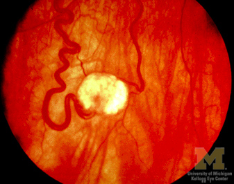

+ Bệnh Lindau - von Hippel

Lindau - von Hippel disease
* Định nghĩa:
+ Bệnh Lindau - von Hippel
* Đặc điểm:
+ Bệnh u mạch võng mạc-tiểu não Von Hippel và Lindau thuộc khuôn khổ những hội chứng thần kinh - da và những bệnh u mạch thần kinh - mắt. Bệnh có tính gia đình trong 20% số trường hợp và truyền theo kiểu trội với tính thâm nhập không hoàn chỉnh và độ biểu hiện thay đổi.
+ Về phương diện giải phẫu, u mạch là một u mạch máu chuyển dạng sang u nang. Triệu chứng gồm:
- U mạch võng mạc: được phát hiện nhân một tình trạng giảm thị lực hoặc nhân một hội chứng thần kinh. Trong một nữa số các trường hợp bị cả hia mắt, soi đáy mắt ở giai đoạn dầu của bệnh, thấy giãn mạch ở cả đôi động mạch và tĩnh mạch từ gai thị ra, đường đi ngoằn ngoèo, ra đến chu biên thì tận cùng bằng một nốt u mạch nhỏ, màu đỏ, lồi ra trước võng mạc. Đôi khi thấy có nhiều nốt u mạch ở võng mạc.

Về sau, bột mặt lâm sàng rất gợi ý ta thấy rõ một u mạch thực sự, tròn, như hình quả trứng, trong đó cả đôi động mạch và tĩnh mạch chui vào, màu sẫm và giãn rất to. Xuất huyết và rỉ dịch võng mạc vây quanh u mạch. Cuối cùng xảy ra những biến cố nặng tại chỗ như chảy máu dịch kính, viêm võng mạc tăng sinh và glaucoma thứ phát tuyệt đối.
- Một u mạch tiểu não: rất hay phối hợp theo, hoặc cần phải phát hiện bằng các xét nghiệm thần kinh và chụp động mạch. Lúc bấy giờ u mạch sẽ dẫn đến một hội chứng tăng áp lực nội sọ (tổn thương não thất IV), các dấu hiệu tiểu não và đôi khi xuất huyết ở màng não. U mạch nang hóa hiếm khi ở thân não và tủy. Những cơn động kinh và rối loạn tâm thần có được nếu lên.
- Các nang nội tạng: thỉnh thoảng có phối hợp với u mạch thần kinh - võng mạc, thường khu trú ở tụy, lách, gan và thận.
Tất cả những biểu hiện lâm sàng khác nhau này hiếm khi được đầy đủ, nhưng cần phải tìm kiếm một cách có hệ thống ở người bệnh.
Hình: Nang thận P trên chụp cắt lớp trên bệnh nhân u mạch võng mạc
Ngày nay phương pháp quang đông cho phép ta giải quyết được sớm u mạch võng mạc một cách có hiệu quả.